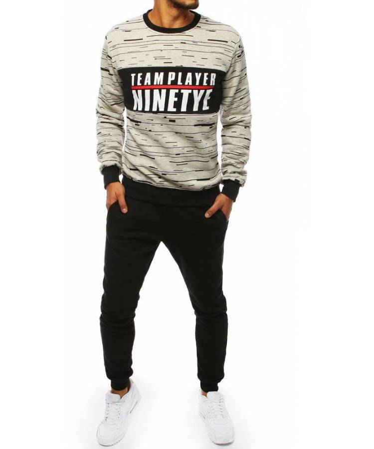
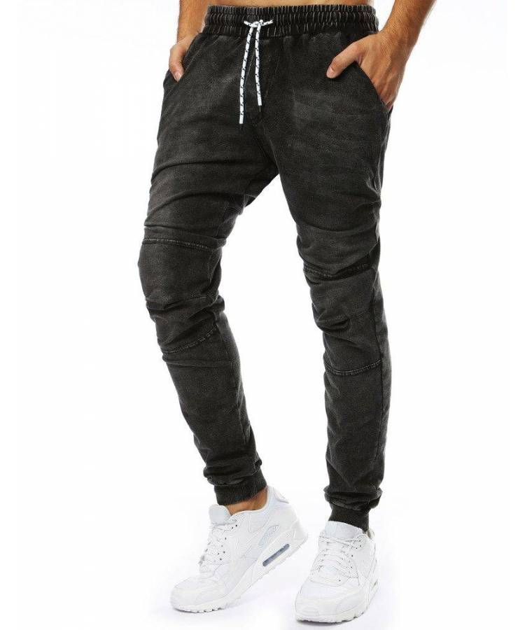

Moteriški klasikiniai kostiumai - 44 nuotraukos madingų lankų visoms progoms - „Confetissimo“ - moterų tinklaraštis
 Pereiti prie turinio Confetissimo - moterų dienoraštis
Mada, stilius, grožis, santykiai, namai
Pagrindinis iHerb Keto dieta Keto skaičiuoklė Keto receptai Pusryčiai Pietūs Vakarienė Riebalų bombos Padažai ir padažai dietos Dėl svorio Dėl ligų Maistas ir vitaminai Vitaminai Mineralai Maitinimo komponentai Daržovės vaisiai Ягоды Mėsa Рыба Jūros gėrybės Grūdai Pupos Nafta Sūriai kiaušiniai riešutai Prieskoniai sėklos Miltų produktai Augalai ir žolelės Bičių produktai Delikatesai Padažai Desertai ir saldainiai Alkoholiniai gėrimai Mada ir stilius Su ką dėvėti Drabužių stilius Spalva drabužiuose Белье Avalynė Аксессуары Moteriškos figūros rūšys Grožis kūnas Plaukai ir šukuosena Makiažas Manikiūras ir pedikiūras parfumerija Namų tobulinimas Interjero dizainas Svetainės dizainas Virtuvės dizainas Miegamojo dizainas Vonios dizainas Мебель Užuolaidos apšvietimas Dekoro vestuvės Vestuvių mados Vaidinimas Taro Pagrindinis » Mada ir stilius » Drabužių stiliusMoteriški klasikiniai kostiumai - 44 nuotraukos madingų lankų visais atvejais
Classic yra dabartinė tendencija ne tik šiuolaikinėje verslo ir vakarinės mados, bet ir kasdieniniame stiliaus. Vienas iš populiariausių elegantiškų drabužių spintų buvo moterų klasikiniai kostiumai. Įvairūs stilingi modeliai padės jums pasirinkti geriausią variantą, atsižvelgiant į asmenines nuostatas ir figūros ypatybes.
Moterų klasikiniai kostiumai 2018
Naujų madingų moterų kolekcijų rinkiniai yra pilni įvairių audinių, spalvų ir sprendimų pjaustyti. Pagrindinis tokių drabužių požymis yra viršuje - elegantiška striukė arba striukė . Šis elementas pateikiamas sutrumpinto, standartinio ir pailgos stiliaus. Tendencijoje yra vienkartinės ir dvigubos švarkelės, dizainas be tvirtinimo ir galimybė su paslėptomis detalėmis - užtrauktukas, kabliukai ir kiti dalykai. Klasikiniai kostiumai moterims 2018 neatitinka nuovokaus nepatraukliojo stiliaus apibrėžimo. Ir pagrindinė mados komplekto išraiškingumo privalumai priklauso nuo gražių spalvų sprendimų:
Klasikinės spalvos . Tikrasis pasirinkimas lieka monochromatinių juodai baltų modelių. Tačiau drabužiai su klasikinių tonų deriniu atrodo patrauklesni ir originalūs.Ryškiai monochrominis . Šiais metais madingi ir madingi sprendimai. Populiariausios spalvos yra raudonos, geltonos, mėlynos, žolelių ir ryškios pastelinių paletės atspalvių.
Spausdintas dizainas . Šiais metais abstraktūs ir geometriniai modeliai tapo dar madingesni, kurie yra svarbūs tiek verslo, tiek atsitiktiniam išvaizdžiui. Labiausiai madingi yra juostelės, ląstelės, žirneliai ir žąsų pėdos.
Kelnių klasikinis moterų kostiumas
Praktinis ir patogus pasirinkimas, užtikrinantis, kad jūsų funkcija visą dieną bus tvirta, su striuke ir kelnais. Ši tendencija yra tradiciniai modeliai su kelnais tiesiomis pjovėmis ir standartiniu ilgiu. Tačiau, jei ieškote originalios ir neįprastos versijos, sustokite prie sutrumpinto ilgio, įtempto tuščiojo stiliaus, susiaurėjusio silueto ar atskleisto stiliaus. Moterų klasikinis kelnių kostiumas pateikiamas vasaros ir šalto periodo kolekcijose. Stilingai padaugintos kelnės yra aiškiai išlygintos strėlės kojos centre.
Klasikinis moteriškasis kostiumas su sijonu
Sudėtingesnė ir moteriškesnė atrodys su sijonu. Dizaineriai siūlo visus tinkamiausius sprendimus, kurie padėtų slėpti neproporcingo skaičiaus trūkumus, subalansuoti kūno parametrus ir pabrėžti išorės orumą. Tradicinis pasirinkimas - moterų klasikinis kostiumas su pieštuku. Ši parinktis pateikiama midi ir mini ilgyje. Jei jums neriboja griežtas drabužių kodas, galite pasirinkti stilingą stilių su mažu plyšiu. Apranga su sijonu ir linija padės pabrėžti moteriškumą ir net romantišką vaizdą.
Madingi moteriški klasikiniai kostiumai
Šiuolaikinė stiprioji mada neuždeda tokios aiškios pagrindinės taisyklės, kaip prieš kelis dešimtmečius. Šiandien tendencija yra originalūs ir patrauklūs sprendimai, kurie stumia klasikos kryptį į vieną iš pagrindinių moterų drabužių spinta. Stilingas sprendimas įvairinti lankus bus pasirinkimas. striukė su basku , firminiai produktai, iš viršaus ir apačios kontrastingų spalvų derinys. Tačiau svarbus viso dizaino elementas yra audinys. Pažiūrėkime į madingiausius klasikinių kostiumų tipus:
Moteriški klasikiniai aksominiai kostiumai . Tokie modeliai tapo madingiausia naujojo sezono tendencija. Velvet klasikiniai moteriški kostiumai tinka tiek biure, tiek vakare ar romantiškam pėsčiomis.Moteriški klasikiniai šilko kostiumai . Švelnumas ir moteriškumas griežtame paveikslėlyje padės pridėti plaukiančius šilko gaminius. Tačiau šie stiliai daugiausia susiję su šiltu sezonu ar vakarų lanku.
Moteriški klasikiniai kostiumai iš vilnos . Vilnos rinkiniai laikomi labiausiai universaliais pasirinkimais. Šiltuoju metų laiku dizaineriai naudoja ploną, štampuotą vilną, o žiemą ir rudenį populiarėja tankūs, pamušti gaminiai.
Moteriški klasikiniai lininiai kostiumai . Iš natūralaus linų pagaminti drabužiai yra dar vienas stilingas šilumos variantas. Be savo sudėtingų ir elegantiškų išorinių duomenų, tokia medžiaga užtikrins oro cirkuliaciją, kuri daro įtaką bendro vaizdo komfortui. Patariame perskaityti: Mole Fur Coat: pasirinkimas dėl kainos ir kokybės
Klasikinis Chanel kostiumas
Legendinis mados modelis iš garsių prancūzų dizainerių šlovės. Pradinis prekės ženklo rinkinio išvaizda buvo pateikiama su tiesia plunksna ir sijonu be apykaklės su apvalia iškirpte. Klasikinis Coco Chanel kostiumas buvo juodos ir baltos spalvos, todėl jis tapo universalus bet kokiai progai. Šiandien dizaineriai dažniausiai naudoja bendrus modelius iškirptuose ir atskiruose elementuose. Tuo pačiu metu ryškių ir pastelinių atspalvių modelio tendencijos. Be kostiumo medvilnės, drabužiai yra siuvami iš tweed, trikotažo ir vilnos.
Klasikinis trijų dalių kostiumas
Pastaraisiais metais ši galimybė įgavo konservatyvų požiūrį. Galų gale, moterų klasikinis trijų dalių kostiumas daro vaizdą labiau uždarią ir ribotą. Atsižvelgiant į tai, kad tendencija palengvina išvaizdą, šis stilius tapo grynai verslo stiliumi, kurio stora aprangos kodas. Ypatinga rinkinio bruožas - tai trumpalaikė liemenė, dėvima po striuke. Šiuo atveju apatinė dalis gali būti ir kelnės, ir sijonas. Trejeto privalumas yra sugebėjimas be švarko šilumos ir papildomo sluoksnio šaltojo sezono metu.
Klasikiniai megzti kostiumai
Jei norite pritraukti maksimalų dėmesį ir pabrėžti savo individualų stilių, elegantiški drabužiai turėtų būti pasirinkti megztų gaminių kolekcijose. Atsižvelgiant į griežtą dizaino orientaciją, neįtraukiami bet kokie tekstūruoti modeliai - juostelės, aranai ir kiti. Tačiau moterų madingi klasikiniai kostiumai, pagaminti iš melanso siūlų, padės pridėti patrauklumą ir patrauklumą. Merginoms, kurioms netaikomi griežti drabužių kodai, žakardo modeliai bus geras sprendimas. Tačiau šiuo atveju nesitiki rasti kontrastingų modelių. Čia yra aktualios ląstelės, juostelės, zigzagai ir kiti.
Moteriškas klasikinis kostiumas su liemeniu
Pastaraisiais metais madinga tendencija yra rinkinys, kuriame vietoj striukės pateikiamas striukė. Tokie stiliai yra susiję su tuo, kad apačioje galite dėvėti įvairias parinktis - palaidinę, golfo ar vandenskotną, marškinius. Ši galimybė leidžia jums būti skirtingi kiekvieną dieną. Ypač populiarūs yra ryškūs vienviečiai modeliai - raudonas klasikinis kostiumas, gaminiai iš geltonos, rožinės ir mėlynos atspalvių. Dizaineriai siūlo drabužius su liemeniu iš standartinio ilgio ir pailgos pjūties. Pastaroji galimybė gali būti tiesi arba sumontuota, kuri padės ištaisyti skaičiaus proporcijas.
Patariame perskaityti: Kaip stilingai susirišti ant jo galvos skara?
Klasikinis angliškas kostiumas
Atskira griežtos savybės Anglų stilius Aprangos dizaino linijų aiškumas ir minimalizmas. Tradicinis moterų juodas klasikinis kostiumas. Tačiau, jei nelipnios lankai, modeliai su anglų ląstelių arba nekontrasto juostos spausdintuvu tapo geriausiu pasirinkimu. Norint suprasti, kokie stilius priklauso angliškių vyrų arsenalui, verta prisiminti, kad čia striukė visada būna standartinio ilgio ir turi sulankstyti lapelius. Dangtelis dažniausiai yra dvigubas. Bet atskirose kolekcijose galite rasti vienkartinę versiją.
Klasikinis kostiumas su juostelėmis
Vertikaliai kontrastingi įdėklai išilgai viso kojos ilgio tapo madingu sprendimu naujausiose elegantiškų moteriškų drabužių kolekcijose. Tačiau svarbu nepamiršti, kad jei pasirinksite tokį verslo ir biuro lankų modelį, tada žibintai turi būti vieni. Tokiu atveju bet kokie ryškūs sprendimai neįtraukiami. Kasdieniam dėvėjimui stilingas pasirinkimas yra klasikiniai kostiumai mergaitėms su dvigubais ir trigubais skirtingo pločio įdėklais. Dažnai, nors nebūtinai, toks patrauklus papildymas pateikiamas dizaino striukės ant rankovėmis, kurios atrodo labai harmoningai.
Klasikinis kostiumas su šortais
Vasarą variantas, papildytas trumpais šortais, tapo madingu pasirinkimu. Bet jei pasirinksite ypač griežtus elegantiškus drabužius, turėtumėte pamiršti apie džinsus ar mezgimo modelius. Dėl šių laisvų stilių šortai, dažnai papildomi simetriška viršuje. Dugno ilgis čia uždaro klubus pusiau. Tokie drabužiai visada pabrėžia lieknas kojas ir pridės šviežumo vaizdui. Todėl komplektas su šortai priklauso moterų jaunimo klasikinių kostiumų kategorijai. Karštuoju sezonu faktinis pasirinkimas bus produktas su tvirtu liemeniu.
Klasikiniai šilti kostiumai
Žiemą toks madingas moteriško drabužių elementas nepraranda savo aktualumo. Pagrindinis skirtumas, renkantis žiemos komplektą, yra audinys. Dėl šiltų modelių tinkamų medžiagų, tokių kaip vilnos, tweed, boucle, stora trikotažas, aksomas, velvetas. Kitas išskirtinis bruožas yra labiau uždari. Dažnai vietoj atlošų striukė papildoma stand-up collar . Dėl šios serijos pailgos striukės ir kelnės vietoj sijono yra sėkmingos. Pavyzdžiui, praktinių spalvų tendencija - moteriškos pilkosios klasikinės striukės ar rudos spalvos tonai, ryškūs vienviečiai spalvų sprendimai ir spaudiniai.
Patariame perskaityti: Elegantiškos kepurių ir kepurėlių idėjos 2018-2019 sezono metu: tendencijos ir nauji dalykai
Klasikinis kostiumas nutukusioms moterims
Mielių moterų, turinčių pliuso dydžio, pasirinkimas yra monochromatinių tamsių spalvų modelių pasirinkimas. Idealus laikomas moterų juodas klasikinis kostiumas. Tačiau mados kolekcijose dizaineriai siūlo stilingas alternatyvas tamsiai mėlynoms, pelkėms, violetinėms gėlėms. Jei norite subalansuoti plačią budą, rinkitės siauromis rinkinius pieštukų sijonas midi ilgis arba liesos kelnės. Vizualiai atrodantis aukštesnis ir plonesnis padės pagražinti kelnes. Ir norint pakoreguoti platus pečius, versija su trikampiais atramais ant striukės bus sėkminga.
Ką galiu dėvėti su moters klasikiniu kostiumu?
Toks modernaus modernaus drabužių spinta tapo universaliu sprendimu. Moterų klasikinis verslo kostiumas išlieka grynai biuro stiliaus požymis, stumdamas aprangos kodą. Miesto kojinėje yra laukiami modeliai, kurių apdaila, ryškios spalvos ir spausdintas dizainas. Jei norite dėvėti verslo stilių ir kasdienius lankus, juos reikėtų papildyti atsitiktiniais aksesuarais. Šilko, aksomo gaminiai, šortai ir sijonai puikiai tinka romantiškiems vaizdams. Bet pažiūrėkime į tinkamiausius stilistų sprendimus:
Avalynė . Tradicinis bet kokio stiliaus pasirinkimas bus moteriškas, griežtai užbaigtas - siurbliai, kulkšnies batai, kulnai, oxfords ar derbis. Šiuolaikiniu būdu populiarūs ir mišrios stiliaus vaizdai su sportbačiais, sportbačiais ir slydimo formomis.krepšys . Sėkmingiausias pasirinkimas yra rankinis maišas su aiškia geometrine figūra. Ši parinktis gali būti glausta ar erdvi. Alternatyvus sprendimas būtų odos kryžius dėvėti po švarke ir nešvari sankaba be dekoro.
Аксессуары . Saulės akiniai gali būti suderinti su bet kokiu griežtai nustatytu modeliu. Šiuo atveju verta apsvarstyti priedus su racionaliu rėmu arba be jo. Komfortiška skrybėlė bus stilingas romantiškų derinių pasirinkimas. Bet iš masinių papuošalų ir papuošalų geriau atsisakyti.
Su ką dėvėti Drabužių stilius Galbūt jus taip pat domina. Drabužių stilius TOP-10 madingų švarkų ir pūkinių striukių, skirtų 2020-2021 rudens-žiemos sezonui Praeis pora mėnesių, o visos mados moterys šviesius drabužių rinkinius pakeis madingomis moteriškomis striukėmis Drabužių stilius Kaip paslėpti plačius pečius - patarimai ir 50 nuotraukų Kiekviena mergina galvoje turi savo idealus dėl savo išvaizdos. Tai mums įskiepija madinga Drabužių stilius Megztos suknelės - geriausi modeliai ir 60 nuotraukų Madingos megztos suknelės yra gana brangios, tačiau visa tai galima lengvai paaiškinti: tokios suknelės Drabužių stilius 7 madingiausi moteriški avikailių modeliai 2021 metų žiemai Daugelis ponių labiau mėgsta avikailį kaip viršutinius drabužius rudeniui, žiemai ir pavasariui. Ji Drabužių stilius 10 madingiausių moteriškų striukių - 2020–2021 m. Ruduo-žiema Striukė yra viršutinių drabužių variacija, kurią patogu mesti palaidinę ar marškinėlius vėsioje, Drabužių stilius 10 madingų drabužių ir aksesuarų tendencijų - 2020–2021 m. Ruduo – žiema Mados tendencijos visada yra vienu žingsniu priekyje. Dizaineriai roges ruošia vasarą, ir jie jau prognozuoja Добавить комментарий Atšaukti atsakymą Svetainės medis Slapukų sutartis Privatumo politika Susisiekti © 2018-2020 Confetissimo - moterų tinklaraštis Kopijuoti svetainės medžiagą draudžiama. Svetainėje pateikiama informacija yra skirta tik informaciniais tikslais. Tai negali pakeisti kvalifikuotos medicininės priežiūros. Narkotikus, gydymo metodus ir jų paskirtį, taip pat jų vartojimo kontrolę gali atlikti tik gydytojas. Būtinai pasitarkite su specialistu. Russian Albanian Arabic Armenian Azerbaijani Basque Belarusian Bengali Bosnian Bulgarian Catalan Chinese (Traditional) Croatian Czech Danish Dutch English Estonian Filipino Finnish French Georgian German Greek Hebrew Hindi Hungarian Icelandic Indonesian Irish Italian Japanese Kazakh Korean Latvian Lithuanian Luxembourgish Macedonian Mongolian Norwegian Pashto Persian Polish Portuguese Romanian Russian Serbian Slovak Slovenian Somali Spanish Swahili Swedish Tajik Thai Turkish Ukrainian Uzbek Vietnamese Mes naudojame slapukus, kad mūsų svetainė būtų geriausiai pristatoma. Jei ir toliau naudosite svetainę, mes manysime, kad tai jums tinka. Privatumo politika Ok
